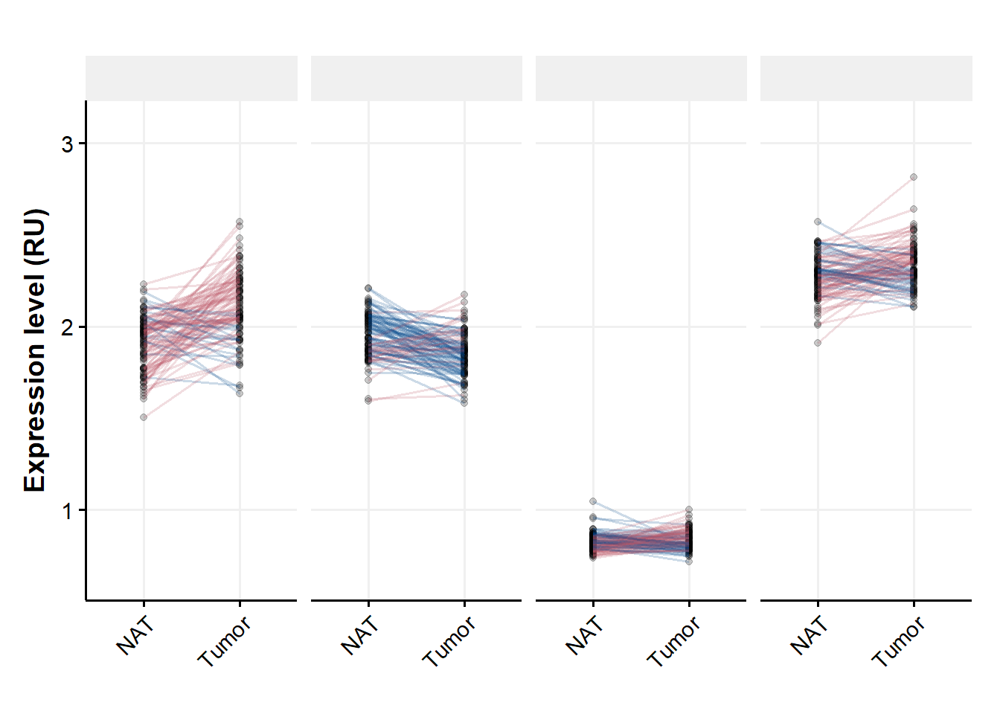
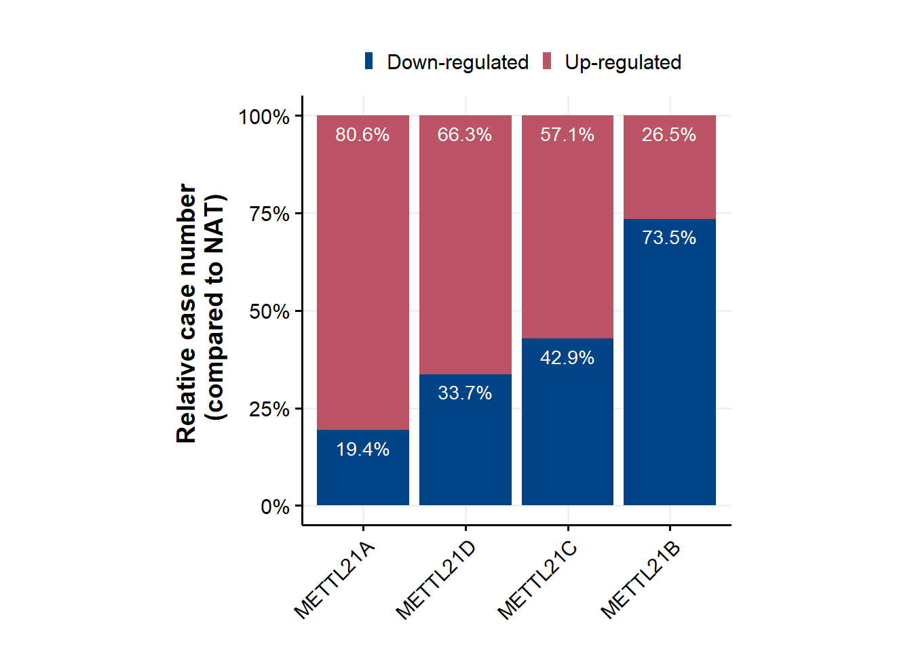
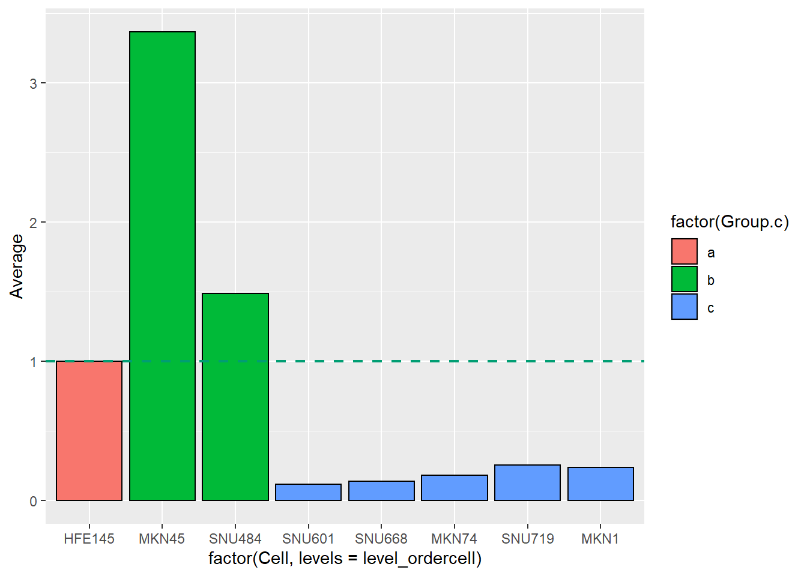
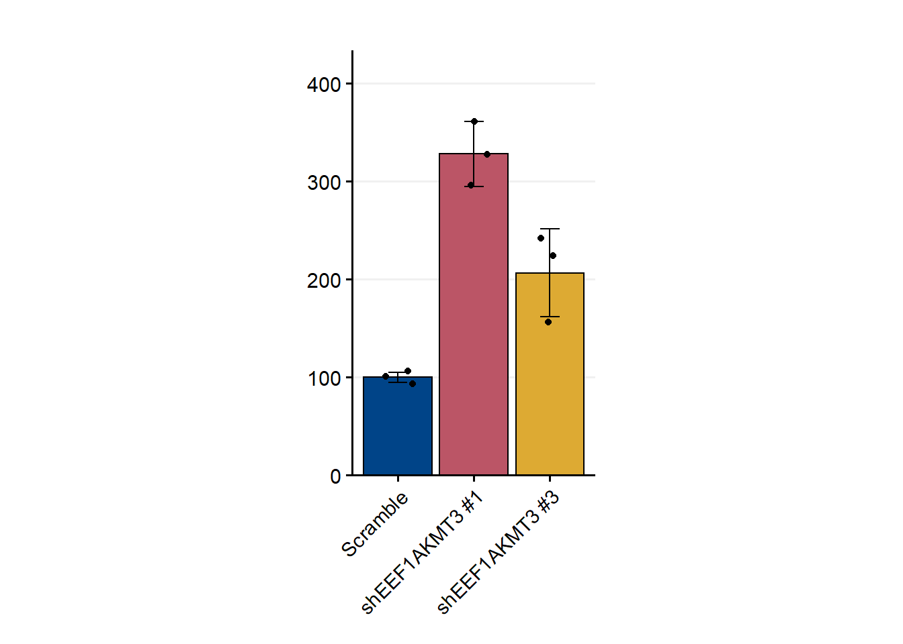
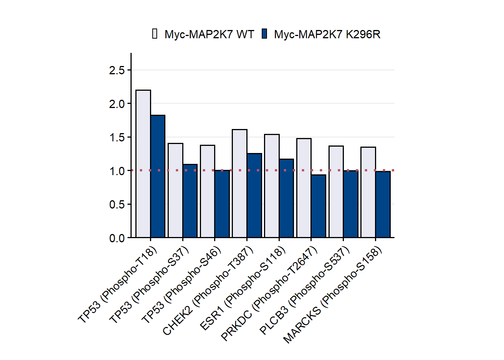
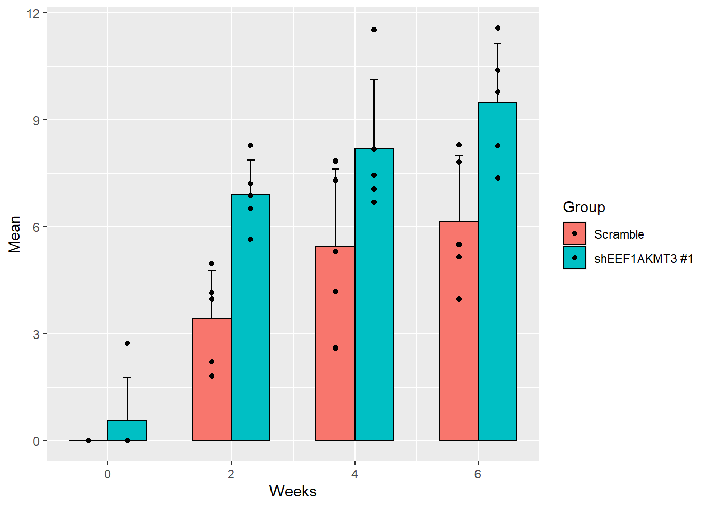
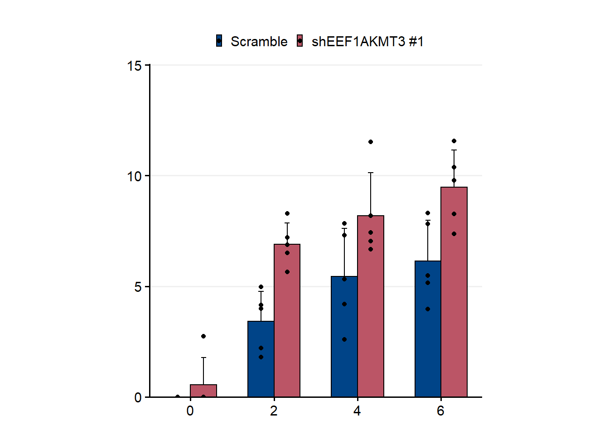
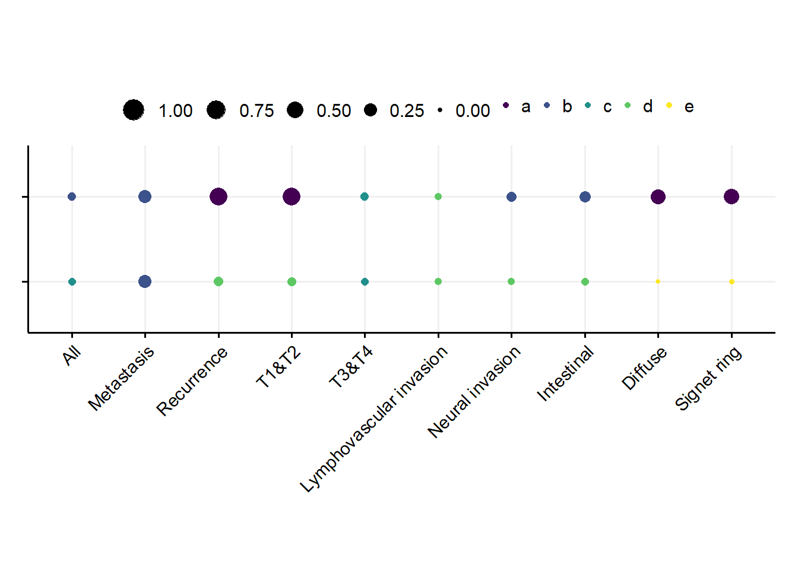

Plotting (EEF1AKMT3 paper example)
Created by : Nur Aziz
1 Note
- Here I documented the codes I used to make graph/figuring for EEF1AKMT3 paper published in Cancer Letters.
- Unfortunately, the graph did not look so good on the published one because it was compressed in Ms. Word.
- These are the codes just for figuring. Data analysis was both
performed in Ms. Excel and R. Don’t get confused.
2 Packages and libraries
library(tidyverse)
library(dplyr)
library(ggpubfigs)
library(forcats)
library(svglite)
Sys.setenv(LANG='en')
library(gridExtra)3 Make uniform graph format
theme_Publication <- function(base_size=14, base_family="helvetica") {
library(grid)
library(ggthemes)
(theme_foundation(base_size=base_size, base_family=base_family)
+ theme(plot.title = element_text(face = "bold",
size = rel(1.2), hjust = 0.5),
text = element_text(),
panel.background = element_rect(colour = NA),
plot.background = element_rect(colour = NA),
panel.border = element_rect(colour = NA),
axis.title = element_text(face = "bold",size = rel(1)),
axis.title.y = element_text(angle=90,vjust =2),
axis.title.x = element_text(vjust = -0.2),
axis.text = element_text(),
axis.line = element_line(colour="black"),
axis.ticks = element_line(),
panel.grid.major = element_line(colour="#f0f0f0"),
panel.grid.minor = element_blank(),
legend.key = element_rect(colour = NA),
legend.position = "bottom",
legend.direction = "horizontal",
legend.key.size= unit(0.2, "cm"),
legend.margin = unit(0, "cm"),
legend.title = element_text(face="italic"),
plot.margin=unit(c(10,5,5,5),"mm"),
strip.background=element_rect(colour="#f0f0f0",fill="#f0f0f0"),
strip.text = element_text(face="bold")
))
}
pd <- position_dodge(0.1)
{
friendly_pals <- list(
bright_seven = c("#4477AA", "#228833", "#AA3377", "#BBBBBB", "#66CCEE", "#CCBB44", "#EE6677"),
contrast_three = c("#004488", "#BB5566", "#DDAA33"),
vibrant_seven = c("#0077BB", "#EE7733", "#33BBEE", "#CC3311", "#009988", "#EE3377", "#BBBBBB"),
muted_nine = c("#332288", "#117733", "#CC6677", "#88CCEE", "#999933", "#882255", "#44AA99", "#DDCC77", "#AA4499"),
nickel_five = c("#648FFF", "#FE6100", "#785EF0", "#FFB000", "#DC267F"),
ito_seven = c("#0072B2", "#D55E00", "#009E73", "#CC79A7", "#56B4E9", "#E69F00", "#F0E442")
)
}
contrast_three = c("#004488", "#BB5566", "#DDAA33")4 Pair Plot
- Geom point
- Geom line with different color
Fig1<- read.delim("~/Repository/repository/docs/M21B/M21B Fig 1BC.csv")
head(Fig1)## Patient Value Tissue Methyltransferase
## 1 132 2.32865 NAT METTL18
## 2 133 2.08113 NAT METTL18
## 3 134 1.94116 NAT METTL18
## 4 135 2.16355 NAT METTL18
## 5 136 2.03273 NAT METTL18
## 6 138 2.29202 NAT METTL18Fig1<-Fig1 %>%
filter(Methyltransferase=='METTL21A'|Methyltransferase=='METTL21B'|Methyltransferase=='METTL21C'|Methyltransferase=='METTL21D')
Fig1<-Fig1 %>%
select(Value,Tissue,Patient,Methyltransferase) %>%
spread(Tissue, Value) %>%
mutate(is_increasing=Tumor>NAT) %>%
gather("Tissue","Va",3:4)
b<-ggplot(Fig1,aes(x=Tissue,y=Va))+
geom_point(alpha=0.2,size=1.5)+
geom_line(aes(group = Patient, col = is_increasing),alpha=0.2,show.legend = NULL,size=0.7)+
labs(y=element_blank(),x=element_blank())+
theme(axis.text.x = element_text(angle = 45,vjust = 1,hjust = 1),
aspect.ratio = 1,
panel.spacing = unit(1.5,'cm'))+
facet_grid(~Methyltransferase,labeller=label_wrap_gen(width=16))
c<-b+theme_Publication()+
scale_fill_manual(values = friendly_pal("contrast_three"))+
scale_color_manual(values = friendly_pal("contrast_three"))+
scale_y_continuous(expand=expand_scale(mult = c(0.1,0.2)))+
ylab('Expression level (RU)')+
theme(axis.text.x = element_text(angle = 45,vjust = 1,hjust = 1),
strip.text.x = element_text(size = 12, face="bold",family="Arial",colour="#f0f0f0"))
c
5 Bar graph stacking
- Calculate persentage downregulated and upregulated
#count upregulated and downregulated
upre<-Fig1 %>%
filter(is_increasing %in% TRUE) %>%
group_by(Methyltransferase) %>% tally()
downre<-Fig1 %>%
filter(is_increasing %in% FALSE) %>%
group_by(Methyltransferase) %>% tally()
#make dataframe
dupre<-data.frame(upre)
dupre<-dupre %>%
mutate("Regulation"="Up-regulated")
ddown<-data.frame(downre)
ddown<-ddown %>%
mutate("Regulation"="Down-regulated")
#merge dataframe into one --> add as additional row
mergebind <- rbind(dupre, ddown)
mergebind## Methyltransferase n Regulation
## 1 METTL21A 158 Up-regulated
## 2 METTL21B 52 Up-regulated
## 3 METTL21C 112 Up-regulated
## 4 METTL21D 130 Up-regulated
## 5 METTL21A 38 Down-regulated
## 6 METTL21B 144 Down-regulated
## 7 METTL21C 84 Down-regulated
## 8 METTL21D 66 Down-regulated#make column persentage
mergepersentage <- mergebind %>%
group_by(Methyltransferase) %>%
mutate(pct=prop.table(n))
mergepersentage## # A tibble: 8 × 4
## # Groups: Methyltransferase [4]
## Methyltransferase n Regulation pct
## <chr> <int> <chr> <dbl>
## 1 METTL21A 158 Up-regulated 0.806
## 2 METTL21B 52 Up-regulated 0.265
## 3 METTL21C 112 Up-regulated 0.571
## 4 METTL21D 130 Up-regulated 0.663
## 5 METTL21A 38 Down-regulated 0.194
## 6 METTL21B 144 Down-regulated 0.735
## 7 METTL21C 84 Down-regulated 0.429
## 8 METTL21D 66 Down-regulated 0.337- Plotting
level_order <- c('METTL21A', 'METTL21D','METTL21C','METTL21B')
level_order2<-c('Down-regulated','Up-regulated')
a<-mergepersentage %>%
ggplot(aes(x=factor(Methyltransferase,level=level_order),y=pct,fill=factor(Regulation,level=level_order2)))+
geom_col(position=position_stack(reverse = TRUE))+
geom_text(aes(label=scales::percent(pct)),vjust=+1.75,col="white",size=3.75,position = position_stack(reverse = TRUE))+
scale_y_continuous(labels = scales::percent)
c<-a+theme_Publication()+
scale_fill_manual(values = friendly_pal("contrast_three"))+
scale_color_manual(values = friendly_pal("contrast_three"))+
ylab('Relative case number \n (compared to NAT)')+
theme(legend.position = 'top',
legend.title = element_blank(),
axis.title.x = element_blank(),
axis.text.x=element_text(angle = 45,vjust=1,hjust=1),
axis.text = element_text(family = 'Arial'),
aspect.ratio = 1)
c 
6 Bar graph with hline
######Figure 1F#####
Fig1F<-read.delim("~/Repository/repository/docs/M21B/M21B Fig 1F.csv")
head(Fig1F)## Cell Average Group.c
## 1 HFE145 1.0000000 a
## 2 MKN45 3.3672878 b
## 3 SNU484 1.4868779 b
## 4 SNU601 0.1183837 c
## 5 SNU668 0.1385055 c
## 6 MKN74 0.1838185 clevel_ordercell<-c('HFE145','MKN45','SNU484','SNU601','SNU668','MKN74','SNU719','MKN1')
a<-Fig1F %>%
ggplot(aes(x=factor(Cell,levels = level_ordercell),y=Average,fill=factor(Group.c)))+
geom_bar(stat="identity",color='black')+
geom_hline(aes(yintercept=1), color=friendly_pal("ito_seven")[3], linetype="dashed",size=.8)
a
a+theme_Publication()+
scale_fill_manual(values = friendly_pal("contrast_three"))+
scale_color_manual(values = friendly_pal("contrast_three"))+
scale_y_continuous(expand=expand_scale(mult = c(0,0.2)))+
theme(axis.text.x = element_text(angle = 90,vjust = 1,hjust = 1),
axis.title.y = element_blank(),
legend.position = 'none',
axis.title.x = element_blank(),
aspect.ratio = 1)
7 Bar graph with errorbar
Fig2A<-read.delim("~/Repository/repository/docs/M21B/M21B Fig 2A.csv",sep = '\t')
head(Fig2A)## Group Value
## 1 Scramble 104.89210
## 2 Scramble 100.14390
## 3 Scramble 94.96403
## 4 shEEF1AKMT3 #1 295.68350
## 5 shEEF1AKMT3 #1 362.15830
## 6 shEEF1AKMT3 #1 326.76260{
df<-Fig2A
df.summary<-df %>%
group_by(Group) %>%
summarise(
sd=sd(`Value`,na.rm = TRUE),
Mean=mean(`Value`)
)
df.summary
df
a<-ggplot(df.summary,aes(fill=Group))+
geom_bar(aes(x=Group,y=Mean),stat = 'identity',color='black')+
geom_jitter(data=df,aes(x=Group,y=Value),position=position_jitter(.2),color='black')+
geom_errorbar(aes(x=Group, y=Mean, ymin=Mean-sd,ymax=Mean+sd),width=.25)
a+theme_Publication()+
scale_fill_manual(values = friendly_pal("contrast_three"))+
scale_color_manual(values = friendly_pal("contrast_three"))+
scale_y_continuous(expand=expand_scale(mult = c(0,0.2)))+
theme(axis.text.x = element_text(angle = 45,vjust = 1,hjust = 1),
axis.title.y = element_blank(),
legend.position = 'none',
axis.title.x = element_blank(),
panel.grid.major.x = element_blank(),
aspect.ratio = 1.75)
}
8 Bar graph (multiple) with deviation
Fig5H<-read.delim("~/Repository/repository/docs/M21B/M21B Fig 5H.csv",sep = '\t')
head(Fig5H)## Phospho Group Value
## 1 TP53 (Phospho-T18) Myc-MAP2K7 WT 2.199384
## 2 TP53 (Phospho-S37) Myc-MAP2K7 WT 1.403808
## 3 TP53 (Phospho-S46) Myc-MAP2K7 WT 1.376446
## 4 CHEK2 (Phospho-T387) Myc-MAP2K7 WT 1.611975
## 5 ESR1 (Phospho-S118) Myc-MAP2K7 WT 1.541289
## 6 PRKDC (Phospho-T2647) Myc-MAP2K7 WT 1.479140bw<-Fig5H
bw$Group <- factor(bw$Group, levels = c("Myc-MAP2K7 WT", "Myc-MAP2K7 K296R"))
bw$Phospho <- factor(bw$Phospho, levels = c('TP53 (Phospho-T18)',
'TP53 (Phospho-S37)',
'TP53 (Phospho-S46)',
'CHEK2 (Phospho-T387)',
'ESR1 (Phospho-S118)',
'PRKDC (Phospho-T2647)',
'PLCB3 (Phospho-S537)',
'MARCKS (Phospho-S158)'))
dodge<-position_dodge(width=.75)
a<-ggplot(bw,aes(x=`Phospho`,y=`Value`))+
geom_bar(stat="identity",
position=position_dodge(), size=.6,aes(fill=`Group`),color='black')+
geom_hline(aes(yintercept=1),linetype='dotted',color=c(friendly_pal("contrast_three")[2]),size=1.2)
a+theme_Publication()+
scale_fill_manual(values = c('#E8E9F3',friendly_pal("contrast_three")))+
scale_color_manual(values = c('#E8E9F3',friendly_pal("contrast_three")))+
scale_y_continuous(expand=expand_scale(mult = c(0,0.25)),breaks=(seq(0,2.5,0.5)))+
theme(axis.text.x = element_text(angle = 45,vjust = 1,hjust = 1),
axis.title.y = element_blank(),
legend.position = 'top',
legend.title = element_blank(),
axis.title.x = element_blank(),
panel.grid.major.x = element_blank(),
aspect.ratio = .7)
Fig2F<-read.delim("~/Repository/repository/docs/M21B/M21B Fig 2F.csv",sep = '\t')
head(Fig2F)## Weeks Group Value
## 1 0 shControl 0.000
## 2 0 shControl 0.000
## 3 0 shControl 0.000
## 4 0 shControl 0.000
## 5 0 shControl 0.000
## 6 2 shControl 1.805Fig2F<-Fig2F %>%
mutate(Group = case_when(Group == 'shControl' ~ 'Scramble',
Group == 'shM21B' ~ 'shEEF1AKMT3 #1'))
head(Fig2F)## Weeks Group Value
## 1 0 Scramble 0.000
## 2 0 Scramble 0.000
## 3 0 Scramble 0.000
## 4 0 Scramble 0.000
## 5 0 Scramble 0.000
## 6 2 Scramble 1.805df<-Fig2F
df.summary<-df %>%
group_by(Weeks,Group) %>%
summarise(
sd=sd(`Value`,na.rm = TRUE),
Mean=mean(`Value`)
)
df.summary## # A tibble: 8 × 4
## # Groups: Weeks [4]
## Weeks Group sd Mean
## <int> <chr> <dbl> <dbl>
## 1 0 Scramble 0 0
## 2 0 shEEF1AKMT3 #1 1.22 0.547
## 3 2 Scramble 1.35 3.42
## 4 2 shEEF1AKMT3 #1 0.962 6.90
## 5 4 Scramble 2.17 5.45
## 6 4 shEEF1AKMT3 #1 1.96 8.18
## 7 6 Scramble 1.84 6.15
## 8 6 shEEF1AKMT3 #1 1.67 9.48df ## Weeks Group Value
## 1 0 Scramble 0.000
## 2 0 Scramble 0.000
## 3 0 Scramble 0.000
## 4 0 Scramble 0.000
## 5 0 Scramble 0.000
## 6 2 Scramble 1.805
## 7 2 Scramble 4.152
## 8 2 Scramble 2.209
## 9 2 Scramble 3.981
## 10 2 Scramble 4.963
## 11 4 Scramble 2.598
## 12 4 Scramble 7.310
## 13 4 Scramble 5.312
## 14 4 Scramble 7.833
## 15 4 Scramble 4.185
## 16 6 Scramble 8.301
## 17 6 Scramble 5.493
## 18 6 Scramble 7.808
## 19 6 Scramble 3.978
## 20 6 Scramble 5.163
## 21 0 shEEF1AKMT3 #1 2.737
## 22 0 shEEF1AKMT3 #1 0.000
## 23 0 shEEF1AKMT3 #1 0.000
## 24 0 shEEF1AKMT3 #1 0.000
## 25 0 shEEF1AKMT3 #1 0.000
## 26 2 shEEF1AKMT3 #1 5.653
## 27 2 shEEF1AKMT3 #1 8.281
## 28 2 shEEF1AKMT3 #1 6.880
## 29 2 shEEF1AKMT3 #1 6.509
## 30 2 shEEF1AKMT3 #1 7.197
## 31 4 shEEF1AKMT3 #1 6.680
## 32 4 shEEF1AKMT3 #1 11.530
## 33 4 shEEF1AKMT3 #1 7.048
## 34 4 shEEF1AKMT3 #1 8.186
## 35 4 shEEF1AKMT3 #1 7.439
## 36 6 shEEF1AKMT3 #1 8.273
## 37 6 shEEF1AKMT3 #1 7.371
## 38 6 shEEF1AKMT3 #1 11.567
## 39 6 shEEF1AKMT3 #1 10.379
## 40 6 shEEF1AKMT3 #1 9.785a<-ggplot(df.summary,aes(fill=Group))+
geom_bar(aes(x=Weeks,y=Mean),stat = 'identity',color='black',position = 'dodge',width = 1.25)+
geom_jitter(data=df,aes(x=Weeks,y=Value),position=position_dodge(width = 1.25),color='black')+
geom_errorbar(aes(x=Weeks, y=Mean, ymin=Mean,ymax=Mean+sd),position=position_dodge(width = 1.25),width=.25)
a
c<-a+theme_Publication()+
scale_fill_manual(values = friendly_pal("contrast_three"))+
scale_color_manual(values = friendly_pal("contrast_three"))+
theme(
axis.title.y = element_blank(),
legend.position = 'top',
legend.title = element_blank(),
axis.title.x = element_blank(),
panel.grid.major.x = element_blank(),
aspect.ratio = 1)+
scale_y_continuous(expand=expand_scale(mult = c(0.0,0.3)))
c
9 Point 3 variable
Fig6B<-read.delim('~/Repository/repository/docs/M21B/M21B Fig 6B.csv', sep='\t')
head(Fig6B)## y x pvalue r2value pvalue.converted pval
## 1 Mettl21B & p-MKK7 All 0.0099 0.05244100 0.010 b
## 2 p-MKK7 & p53 All 0.0306 0.03936256 0.050 c
## 3 Mettl21B & p-MKK7 Metastasis 0.0050 0.27457600 0.010 b
## 4 p-MKK7 & p53 Metastasis 0.0056 0.26853124 0.010 b
## 5 Mettl21B & p-MKK7 Recurrence 0.0001 0.59629284 0.001 a
## 6 p-MKK7 & p53 Recurrence 0.0800 0.08271376 0.500 dbw$Phospho <- factor(bw$Phospho, levels = c('TP53 (Phospho-T18)',
'TP53 (Phospho-S37)',
'TP53 (Phospho-S46)',
'CHEK2 (Phospho-T387)',
'ESR1 (Phospho-S118)',
'PRKDC (Phospho-T2647)',
'PLCB3 (Phospho-S537)',
'MARCKS (Phospho-S158)'))
Fig6B$x <- factor(Fig6B$x, levels=c("All","Metastasis","Recurrence","T1&T2","T3&T4","Lymphovascular invasion","Neural invasion","Intestinal","Diffuse","Signet ring"))
Fig6B$y <- factor(Fig6B$y,levels=c("p-MKK7 & p53","Mettl21B & p-MKK7"))
Fig6B %>%
ggplot(aes(x,y))+
geom_point(aes(colour=pval,size=r2value))+
theme_Publication()+
scale_size_continuous(limits=c(0,1),breaks=c(1,0.75,0.5,0.25,0))+
theme(axis.text.x = element_text(angle = 45,vjust = 1,hjust = 1),
axis.title.y = element_blank(),
legend.position = 'top',
legend.title = element_blank(),
axis.title.x = element_blank(),
axis.text.y = element_blank(),
aspect.ratio = .25)+
scale_fill_viridis_d()+
scale_color_viridis_d()
10 Point with correlation
corre<-read.delim('~/Repository/repository/docs/M21B/correlation.csv', sep='\t')
library(scales)
corre %>%
ggplot(aes(x=`METTL21B`,y=`p.MKK7`))+
theme_bw()+
scale_y_log10(
breaks = trans_breaks("log10", function(x) 10^x),
labels = trans_format("log10", math_format(10^.x)))+
scale_x_log10(
breaks = trans_breaks("log10", function(x) 10^x),
labels = trans_format("log10", math_format(10^.x)))+
geom_point()+
geom_smooth(method=lm, fullrange=FALSE,se=TRUE)+
theme(axis.text=element_text(size=10,family = "Arial",color = "black"))+
theme(text=element_text(size=11,family = "Arial"))+
theme(aspect.ratio = 1)+
theme(axis.title.x = element_text(vjust=-2),axis.title.y = element_text(vjust=+2))+
labs(x=paste0("METTL21B protein level", "\n", "(compared to paired NAT)"))+
theme(strip.text.x = element_text(size = 10, face="bold",family="Arial"))+
labs(y = paste0("p-MKK7 protein level", "\n", "(compared to paired NAT)"))